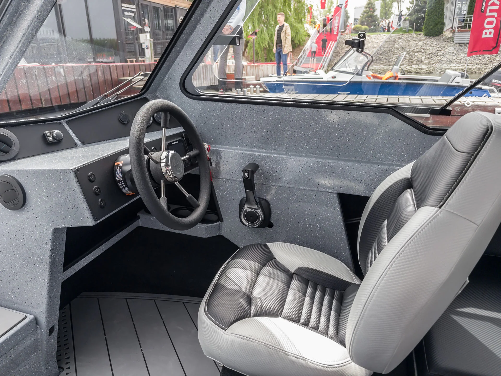
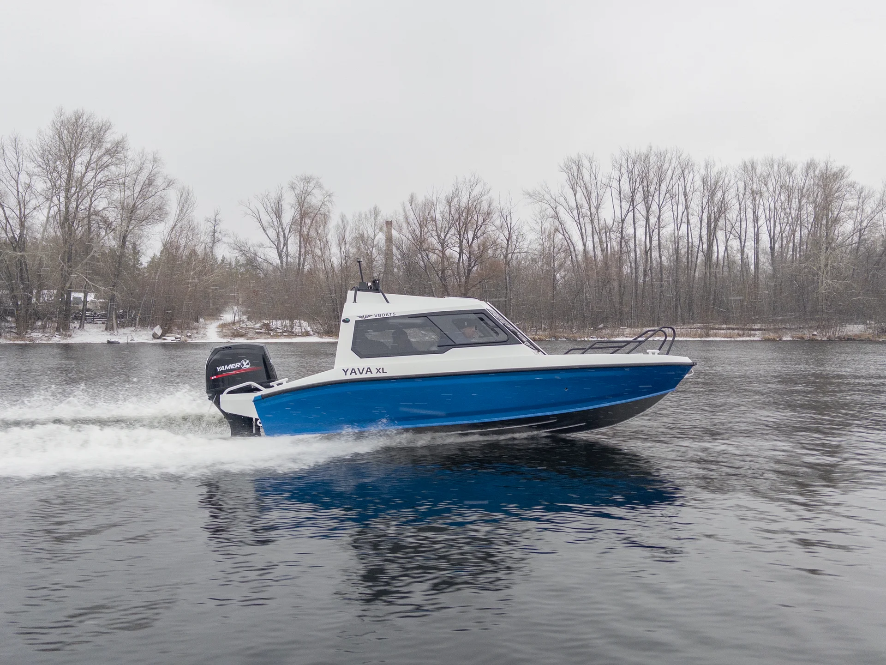
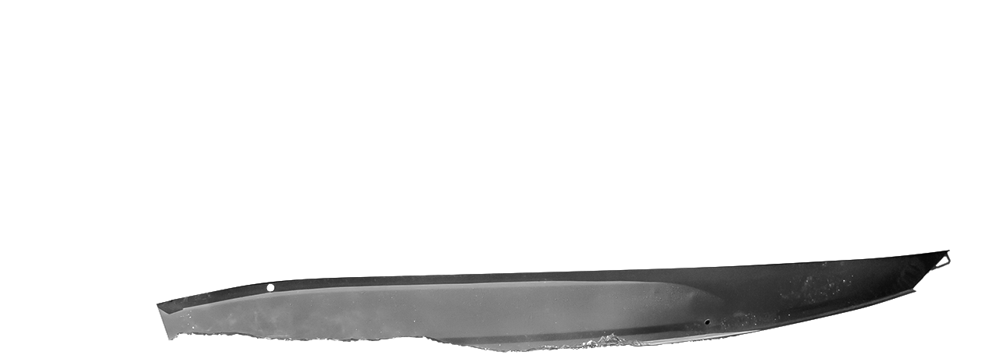
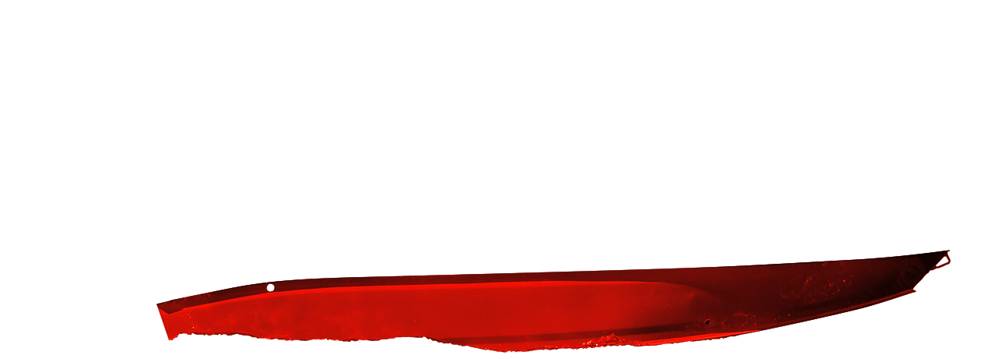
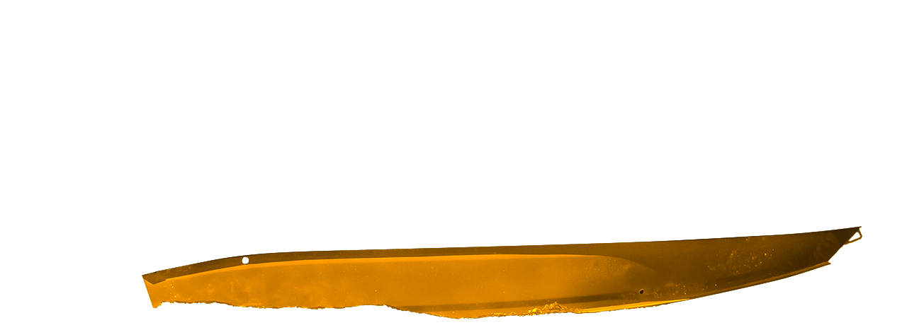
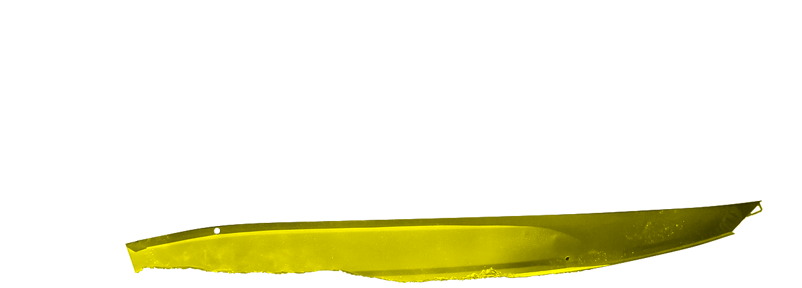
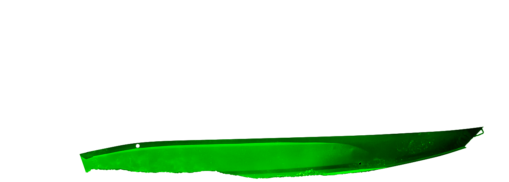
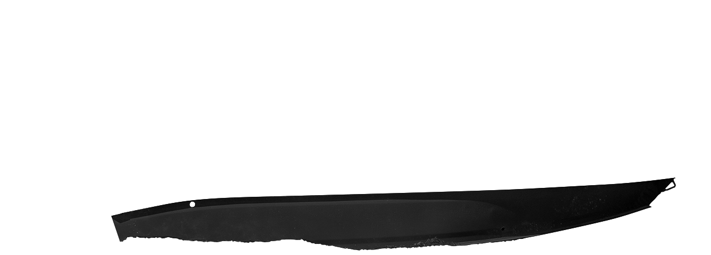
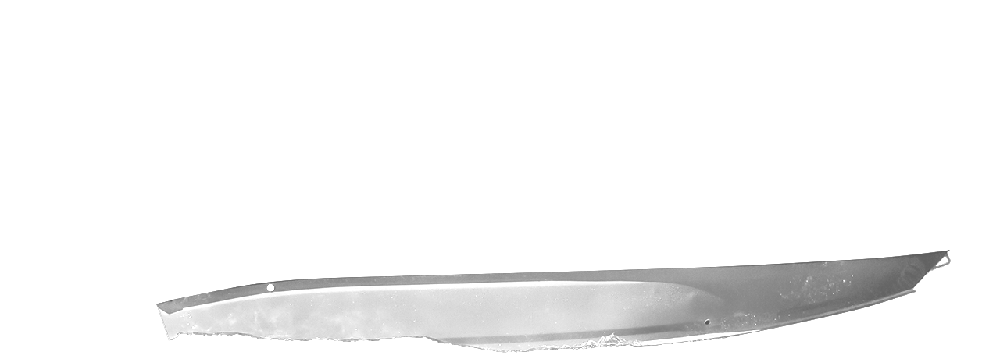

Выйти на воду
Река не требует особого повода. Ранняя рыбалка или спокойный переход — кабинная лодка подходит для обоих планов.
5,68 м длины · 2,01 м ширины
Независимый клуб владельцев
На своей воде.
Лодка, маршруты и люди,
с которыми есть что обсудить.
01 / История модели
Выйти на рассвете. Укрыться от ветра. Взять семью или уйти дальше привычного берега.



Река не требует особого повода. Ранняя рыбалка или спокойный переход — кабинная лодка подходит для обоих планов.
5,68 м длины · 2,01 м шириныКабина защищает от ветра и брызг. Можно перевести дух, согреться и остаться на воде, когда на открытой лодке уже хочется домой.
Закрытая кабина · мягкий салонЭхолот, отопитель, свет и электрика. На базе алюминиевого корпуса каждый собирает лодку под свои привычки и маршруты.
Алюминий 5083 · днище 4 ммУ клуба есть то, чего не найти в каталоге: опыт владельцев. Какой винт выбрать, что доработать и куда сходить в следующие выходные.
Найти своих02 / Параметры
Компактная кабинная лодка. Алюминиевый корпус. Пространство для команды и снаряжения.
По открытым материалам производителя. Характеристики и комплектация могут обновляться.
03 / Сценарии
Когда утро становится холоднее, кабина меняет планы на сезон. Снасти на борту, ветер за стеклом — можно не спешить к берегу.
Спокойный переход, остановка у любимого берега, разговоры в кабине. У каждого выхода может быть свой темп.
Не ставить всё подряд, а собрать то, что нужно вам. Обсуждаем оснащение и делимся решениями, проверенными на воде.
Спросить владельцев04 / Комплектация
От корпуса и топлива до света в кабине — пять составляющих вашей YAVA XL COB.

Состав поставки уточняйте у производителя. Обсуждаемые в клубе доработки не входят автоматически в базовую комплектацию.
05 / Визуальный дневник
06 / Color Study
Восемь вариантов нижнего борта.
Та же лодка — другое настроение.







Визуализация по оригинальным слоям производителя. Оттенок на экране может отличаться от окраски лодки.
07 / Свои люди
Реальный опыт начинается с разговора.
О лодке, которую мы знаем и любим.

Это независимое Telegram-сообщество владельцев и поклонников YAVA XL COB для обмена опытом, идеями и полезными решениями.
Нет. Это независимый клуб владельцев. Бренды и официальные материалы принадлежат соответствующим правообладателям.
Да. Сообщество открыто для тех, кто только изучает модель и хочет услышать реальный опыт владельцев.
Откройте ссылку на клуб и присоединитесь к группе.
До встречи на воде
Если вам интересна YAVA XL COB — заходите. Здесь владельцы, полезные советы и планы на следующий выход.
Вступить в Telegram